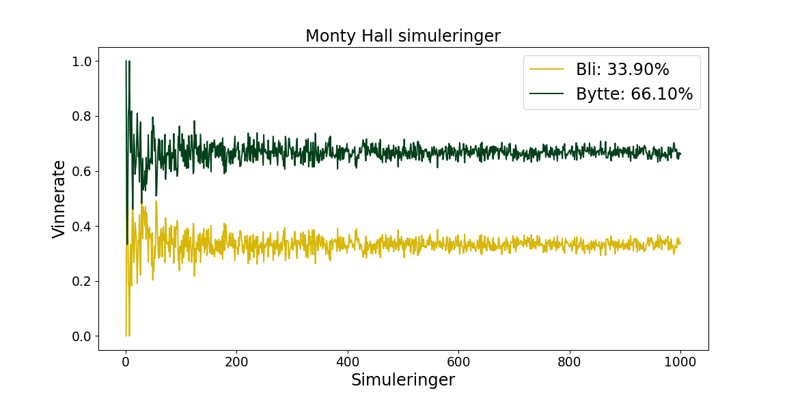

Presentasjon SOK-2012
Handelshøgskolen
23-05-2024
Hvilke spørsmål om menneskelig adferd kan besvares ved hjelp av eksperimentelle metoder?
Effekten av belønning på prestasjon
Effekten av kjønn på lederskaps-evner
Effekten av søvnmangel på kognitiv ytelse
Effekten av medfødt intelligens på skoleprestasjoner
Effekten av sosial påvirkning på beslutningstaking
Ja
Nei
Ja
Nei
Ja
Problemstilling
Hva er sannsynligheten for å bytte konvolutt i Monty Hall-problemet, målt som andelen deltakere som velger å bytte etter å ha mottatt informasjon om innholdet i en av de andre konvoluttene?
Randomized Controlled Trial (RCT)
Eksempel: Testing av nytt treningsprogram på fysisk helsetilstand
Venstre kontrollgruppe:
Tester fysisk helsetilstand før og 12 uker etter treningsprogrammet
Har økt muskelmasse og redusert fettprosent etter treningsprogrammet
Venstre kontrollgruppe har en gjennomsnittsalder på 16 år
Høyre kontrollgruppe:
Tester fysisk helsetilstand før og 12 uker etter placebo-programmet
Har ingen endring i muskelmasse eller fettprosent etter placebo-programmet
Høyre kontrollgruppe har en gjennomsnittsalder på 76 år
Hvorfor blir dette feil?
RCT er en eksperimentell metode som krever at deltakerne tilfeldig fordeles til enten en eksperimentell gruppe eller en kontrollgruppe. Dette gjør det mulig å sammenligne effekten av en intervensjon med en kontrollgruppe som ikke mottar intervensjonen.
Monty-Hall problemet

\(\frac{1}{3}\) \(\frac{1}{3}\) \(\frac{1}{3}\)
Deltakeren velger dør nummer 1
Verten åpner dør nummer 3 med en geit
Deltakeren får muligheten til å bytte dør
Hva bør deltakeren gjøre for å maksimere sjansen for å vinne bilen?
Om deltaker beholder dør nummer 1 = \(\frac{1}{3}\) sjanse
Monty-Hall problemet
\(\frac{1}{3}\) + \(\frac{1}{3}\) = \(\frac{2}{3}\)
Deltakeren velger dør nummer 1
Verten åpner dør nummer 3 med en geit
Deltakeren får muligheten til å bytte dør
Hva bør deltakeren gjøre for å maksimere sjansen for å vinne bilen?
Om deltaker beholder dør nummer 1 = \(\frac{1}{3}\) sjanse
Om deltaker bytter til dør 2 = \(\frac{2}{3}\) sjanse

Problemstilling på nytt
Hva er sannsynligheten for å bytte konvolutt i Monty Hall-problemet, målt som andelen deltakere som velger å bytte etter å ha mottatt informasjon om innholdet i en av de andre konvoluttene?
Eksperimentelt oppsett
Vi randomiserer deltakerne til enten kontrollgruppen \(\overline T\) eller eksperimentgruppen \(T\).
Kontrollgruppen mottar ikke noe kurs, mens eksperimentgruppen deltar i et kurs i sannsynlighetsteori.
Begge gruppene får 100 kroner hver.
De må deretter velge å bruke 50 kr for å delta i et Monty Hall-lignende spill hvor de har mulighet å bytte dør.
I spillet velger de en av tre konvolutter. En av konvoluttene inneholder 150 kr, mens de to andre er tomme.
Eksperimentlederen åpner deretter en av de to resterende konvoluttene som er tom og gir deltakeren valget om å bytte til den gjenværende konvolutten eller beholde det opprinnelige valget.
Dette gjøres så igjen for begge gruppene etter at eksperimentgruppen har deltatt i kurset.
Effekt og analyse
Vi ser da på differansen i andelen som bytter konvolutt mellom de som har tatt kurset og de som ikke har tatt kurset både før og etter kurset.
Da kan vi se hvordan denne informasjonen påvirker eller “oppdaterer” sannsynligheten for at premien befinner seg i en bestemt konvolutt.
For å vise dette så definerer vi hendelsene:
Effekt og analyse
Vi ser da på differansen i andelen som bytter konvolutt mellom de som har tatt kurset og de som ikke har tatt kurset både før og etter kurset.
Da kan vi se hvordan denne informasjonen påvirker eller “oppdaterer” sannsynligheten for at premien befinner seg i en bestemt konvolutt.
For å vise dette så definerer vi hendelsene:
\(G_i\):
\(D_j\):
\(V_k\):
Hendelsen at gevinsten (150 kr) er i konvolutt \(i\) (hvor \(i\) kan være 1, 2, eller 3).
Hendelsen at deltakeren velger konvolutt \(j\) (hvor \(j\) også kan være 1, 2, eller 3).
Hendelsen at verten åpner konvolutt \(k\) (hvor \(k\) kan være 1, 2, eller 3) og viser at den er tom.
Uavhengighet og sannsynlighet og avhengighet
Vi antar at deltakeren velger en konvolutt tilfeldig, og at gevinsten er plassert tilfeldig i en av de tre konvoluttene.
Og før noe valg er gjort, er sannsynligheten for at gevinsten er i en hvilken som helst konvolutt lik:
Dette betyr at hendelsene \(G_i\) eller gevinsten er i konvolutt \(i\) og \(D_j\), deltakerens valg \(j\) er uavhengige for alle \(i\) og \(j\).
\(P(G_i)\) \(=\) \(P(D_j)\) \(=\) \(p(V_k)\) \(= \frac{1}{3}\)
for \(i, j, k = 1, 2, 3\).
Når vi åpner den andre konvolutten så er den avhengig av hvilken konvolutt deltakeren har valgt og hvor gevinsten befinner seg. Vi åpner alltid åpner en tom konvolutt og aldri den som deltakeren har valgt eller den som inneholder gevinsten.
Dette betyr at: \[ P(V_k \mid G_i, D_j) \] er 0 hvis \(k = i\) eller \(k = j\) (med mindre \(i = j\)), og ellers 1 delt på antall gjenværende konvolutter.
Bayes teorem generell formel
Hva er bayes teorem?
Bayes teorem er en matematisk formel som beskriver hvordan vi kan oppdatere sannsynligheten for en hendelse gitt ny informasjon.
Og kan skrives slik:
\[P(A|B) = \frac{P(B|A) P(A)}{P(B|A)P(A)+P(B|\overline A)P(\overline A)}\]
\[P(A|B) = \frac{P(B|A)P(A)}{P(B)}\] Men kan forkortes slik, siden den totale sannsynligheten for \(B\) er lik summen av sannsynligheten for \(B\) gitt \(A\) og sannsynligheten for \(B\) gitt ikke \(A\).
Bayes teorem ved monty hall problemet
Gevinsten, deltakerens valg, og vertens valg hvor \(i, j, k = 1, 2, 3\)
\[ \begin{aligned} {P(\color{#3fb618}{G_i})} \mid \color{#2780e3}{D_j} = \frac{{P(\color{#e83e8c}{V_k} \mid \color{#3fb618}{G_i}, \color{#2780e3}{D_j})} \cdot {P(\color{#3fb618}{G_i})}}{{P(\color{#e83e8c}{V_k} \mid \color{#2780e3}{D_j})}} \end{aligned} \]
\[ \begin{aligned} P(\color{#e83e8c}{V_k} \mid \color{#2780e3}{D_j}) &= \sum_{i=1}^3 P(\color{#e83e8c}{V_k} \mid \color{#3fb618}{G_i}, \color{#2780e3}{D_j}) \cdot P(\color{#3fb618}{G_i}) \end{aligned} \]
Bayes teorem ved monty hall problemet
Anta at deltakeren velger konvolutt 1 (\(D_1\)) og verten åpner konvolutt 3 ( \(V_3\) ), som er tom. Vi vil beregne \(P(G_2 \mid V_3, D_1)\).
\[ \begin{aligned} P(\color{#e83e8c}{V_3} \mid \color{#3fb618}{G_1}, \color{#2780e3}{D_1}) &= \color{#3fb618}{\frac{1}{2}} \\ P(\color{#e83e8c}{V_3} \mid \color{#3fb618}{G_2}, \color{#2780e3}{D_1}) &= \color{#3fb618}{1} \\ P(\color{#e83e8c}{V_3} \mid \color{#3fb618}{G_3}, \color{#2780e3}{D_1}) &= \color{#808080}{0} \end{aligned} \]
Bayes teorem ved monty hall problemet
Anta at deltakeren velger konvolutt 1 (\(D_1\)) og verten åpner konvolutt 3 ( \(V_3\) ), som er tom. Vi vil beregne \(P(G_2 \mid V_3, D_1)\).
\[ \begin{aligned} P(\color{#e83e8c}{V_3} \mid \color{#3fb618}{G_1}, \color{#2780e3}{D_1}) &= \color{#3fb618}{\frac{1}{2}} \\ P(\color{#e83e8c}{V_3} \mid \color{#3fb618}{G_2}, \color{#2780e3}{D_1}) &= \color{#3fb618}{1} \\ P(\color{#e83e8c}{V_3} \mid \color{#3fb618}{G_3}, \color{#2780e3}{D_1}) &= \color{#808080}{0} \end{aligned} \]
Bayes teorem avslutning
\[ P(V_3 \mid D_1) = P(V_3 \mid G_1, D_1) \cdot P(G_1) + P(V_3 \mid G_2, D_1) \] \[ \cdot P(G_2) + P(V_3 \mid G_3, D_1) \cdot P(G_3) \]
\[ P(V_3 \mid D_1) = \frac{1}{2} \cdot \frac{1}{3} + 1 \cdot \frac{1}{3} + 0 \cdot \frac{1}{3} = \frac{1}{2} \]
\[ P(G_2 \mid V_3, D_1) = \frac{P(V_3 \mid G_2, D_1) \cdot P(G_2)}{P(V_3 \mid D_1)} = \frac{1 \cdot \frac{1}{3}}{\frac{1}{2}} = \frac{2}{3} \]
Dette viser at det er en \(\frac{2}{3}\) sannsynlighet for at gevinsten er i den konvolutten deltakeren ikke valgte, som er konvolutt 2 i dette tilfellet.